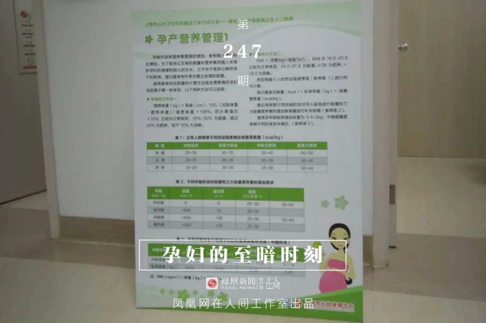

“直播”求医26天，“我删掉了写好的遗书”
原文链接 备份链接 澎湃新闻记者 赵思维 发自武汉 实习生 夏梦洁 从1月23日21时许发出第一条求助微博，25岁的新冠肺炎痊愈者武康发布了50余条微博，粉丝从1000涨至现在的179万粉丝。 这些微博记录了他从发病住不进院的无助、被病魔 …


凤凰新闻客户端 凤凰网在人间工作室出品
28岁的幻境（化名）一直在等待新生命的到来，这是她初次怀孕。第12周的产检，却让她的期待化成泡影。新生命戛然而止，她必须去医院做手术。然而，一场全国范围内新冠肺炎病毒的突袭，使得她的住院之路异常艰辛。她历尽周折，终于住进医院。那一刻，她突然觉得，自己仿佛是在黑暗时刻看到了一束光芒。
2月5日，怀孕12周多的上海孕妇幻境像往常一样，前往自己的建档医院做NT，以进行胎儿早期唐氏综合征的风险评估。
肚子里这个去年12月份出现的小生命，给她全家都带来了巨大的喜悦。幻境更是小心翼翼：上下班不再坐公交车，而是拼车；疫情爆发前去医院，她也都会戴着口罩。为了保胎，春节期间，她没有像往年那样回宁夏老家过年。
幻境来到产检室外，等着被叫号。她手里提着一些糖果，在门外来回踱步。今天就能看到小孩的样子了。她之前听好多孕妇朋友说起，做NT的时候，小孩会调皮，B超医生可能看不到颈部，这时医生会让孕妈出去走一走，吃一些甜食，让小宝宝兴奋起来。她时不时地摸摸肚子，默默地告诉小宝宝，到时候要好好配合医生哦。
随后她进入了B超室。
幻境躺下后，医生做扫描，然后突然问她，“你之前有什么不正常吗？有没有出血？”她愣住了。
胎早停了，在63天左右的时候就停掉了。
晴天霹雳。
幻境觉得自己起不来了。
她哭着问医生，小孩还有没有救？B超医生回答：“胎停很久了，很危险，需要马上做手术。”
医生说胎停可能是因为胚胎本身发育不好，也有可能是外界原因。可是幻境真的想不起来到底哪里出了问题。
今年1月，在该妇幼保健院建档时，各项检查都很正常。最后一次1月13号的B超检查也很正常。即使幻境有时会有小腹和腰部疼痛，但也只是轻微的，且当时医生跟她说过“没关系的”。
她不知道自己是怎么从B超室里走出来的。
丈夫搀扶着她回到产科见了医生。
“有没有可能保得住？”她一直在哭。
产科医生说不可能了，胎停太久了。
幻境无法接受这一事实，她又去询问计划生育科医生。“我真的很想要这个孩子，求求你，能不能帮帮我保住这个孩子？”然而医生的回答也是否定的：
“优胜劣汰，很有可能就是胚胎自身不好，现在已经停了这么多天了，没有办法保的。跟你说死掉了，你要赶紧做手术。”
这句话让幻境感到一丝绝望。“医生对我说，‘跟你说了这么多，你听不懂吗？’我很想要这个孩子，可是没想到一个小生命就这样戛然而止了。”
最后，幻境只能接受现实。在被告知有大出血的可能后，她想要尽快做手术。医院给她开了一张住院申请单，让她回家等通知。
回到家后，幻境情绪很低落，她不敢相信自己的宝宝已经没有了。“是不是医院的仪器坏了，也可能是小宝宝开玩笑呢，说不定后面又会有心跳呢？”
那几天，她几乎每日以泪洗面，甚至想到了死亡。远在宁夏的妈妈打视频电话来安慰她，怕她有什么想不开的，还说要是女儿有什么事情她也活不下去了。
2月7日，医院打来电话通知她10号去办理住院。挂完电话，她还是抱着一丝侥幸。她心想，或许等到10号手术前，小宝宝会再次被检测出心跳的。
在家等待住院和手术的日子里，幻境的丈夫也在查其他的专科医院，准备挂号再去看医生。他们在线咨询了另一家妇产科医院的专家。专家说这种情况要符合急诊才会安排手术，否则还是要走门诊程序。他们还在网上挂了这家妇产科医院的门诊，结果却被短信告知门诊停诊了。
医院的官方网站上写道，“因当前新型冠状病毒感染肺炎疫情的严峻形势，为保障您和您家人的安全，自2020年2月6日起，周末所有门诊暂停；所有专科（PICC门诊除外）门诊暂停；中西医门诊暂停；门诊非急性手术暂停。再次开诊时间将另行通知。
那就只能去自己建档的医院做手术了，她想。

2月10日早晨5点，幻境打出租车去医院。担心手术后体虚，她穿了一件秋衣、一件毛衣和一件羽绒服。虽然家里的口罩储存已经不够了，她还是拿出了新的口罩戴上。到了医院，她在门口测了体温，被允许通行。随后她来到住院部，坐在走廊前的椅子上等候。
8点左右，医生护士陆陆续续来上班。登记住院时，护士给她测体温，结果一只耳朵是37.4度，另一只是37.6度。护士觉得温度偏高，就让幻境等一会儿再测。可是结果还是偏高，一只37.3度，另外一只37.4度。
“这个人不能让她住，医生不收，”一个护士突然跑来说。另一个护士建议幻境去找医生询问。
幻境怔了。“我这胎停一个多月了，再不做怎么办？”她随即拿着病历单去找了医生。
在知道幻境已经量了两遍体温后，医生对护士说道，“第一遍量37.6度，你就直接不收，现在为什么还写一个37.3，你还要收她？（这个病人）不能住。我跟你说过这个病人不收，你为什么还让这个病人来找我？”
幻境察觉到医生的不耐烦，但她仍存有一丝希望，便继续问道，“我情况很危险，怎么办呢？”
“我也没办法，” 医生回复道，并建议幻境等体温稳定了重新去挂门诊，让门诊给约手术。但是前提是，“体温一定要下来。”
幻境知道现在是疫情期间，医院也都很谨慎。她没有多说什么，和丈夫回家了。
“我被请出了医院，很无助，”她说道。
回到家之后，幻境就不断地给自己测体温，一直在36.9度到37.2度之间波动。
第二天，她打开这家医院的微信官方平台，咨询一位医师，她是否可以去住院，得到的回答还是否定的。“体温高需要去发热门诊排除疫情影响，体温正常才能手术，不然术后会感染，”医生在平台上回复道。
这家三级甲等专科医院并没有发热门诊。“伴有发热的患者或孕产妇请至上海市设有发热门诊且有妇产科的医疗机构就诊。”医院客服中心的微信页面上显示。也就意味着，幻境需要先去上海其他设有发热门诊的定点医院做检查。而国家卫健委于2月2日发布的《关于做好儿童和孕产妇新型冠状病毒感染的肺炎疫情防控工作的通知》中明确指出，孕产妇是新型冠状病毒感染的肺炎的易感人群。幻境十分担心自己要是去了发热定点医院会受到感染。平时别人感冒都会受到感染的她，不敢冒这个险。
她在家尝试了各种各样的降温方法。除了一直拿湿毛巾敷在额头上，她拼命给自己灌水，有时在身体上擦点儿酒精，也服了些小柴胡颗粒等等。但是都不奏效。
“我那天已经有点儿流血了，有褐色的血出来了，而且肚子有一种要来大姨妈的感觉”，幻境慌了。
朋友在网上帮她咨询了妇产科专家，专家回复：胎停一般超过两周，不处理就会出现凝血功能障碍，导致出血多。必须尽快住院手术。
幻境自己也继续在线上咨询医生，她还求助了红房子的医生。然而得到的回复和妇婴院一样：但凡是有点轻烧的都不收。如果要挂急诊需要符合急诊的标准，比如出血很严重才会收。即使幻境告诉医生，她已经有褐色分泌物了，医生的回复依然是需要她在家先把体温降下来，或者去发热门诊排除自己是新冠肺炎患者。
“我觉得很绝望，躺在家里的时候就感觉自己在等死，” 幻境说。
远在宁夏老家的父母也很着急。幻境的妈妈打电话来说道，“你在这里躺着，要是大出血，你都来不及去医院，这个很危险！”
在那一刻，幻境突然很希望自己感染了新冠肺炎。“与其在家里等死不如我感染了新冠肺炎，医院给我治。我感染了，医院肯定收我，收了我之后他们肯定会给我处理的。不至于像现在这样我低烧，都还要自己去排除，我也不知道去哪里排除。”
自己会染上新冠肺炎吗？幻境开始回忆。自从21号不上班后，她就一直呆在家里。虽然新闻上大年初一初二的时候已经报道疫情很严重了，但是幻境在的小区似乎没什么反应，那个时候马路上散步的人也不怎么戴口罩。大年初一之前，楼下的小吃店每天早晨有人排队买包子，也没什么人戴口罩。不过她还是觉得自己不太可能感染上，因为她几乎一直呆在家里。
幻境不想等死。
她之前就是担心去设有发热门诊的医院会引发交叉感染，才去的专科的妇婴保健院。但现在她也顾不上了，直接去了家附近的一家设有发热门诊的二甲医院——浦东新区人民医院，挂了急诊。
她告诉医生自己出血了。医生也觉得情况不对，问道，“你胎停都这么久了，为什么拖到现在才来？你有可能随时大出血，情况很危险。”
幻境很紧张，她害怕再次遭到拒绝。她没有告诉医生她被前一家医院拒收是因为体温偏高。她撒了个谎，说是因为还没有排到自己。
医生随后问她是否去过武汉，她说没有。因为是特殊时期，医生让幻境去拍胸部CT，排除感染新冠肺炎才能住院。幻境马上去拍片。
医院人很多，觉得坐电梯浪费时间，她就爬楼梯。她在医院里跑上跑下，有种子宫在下坠的疼痛感。不过也顾不了这么多，“当时就想着赶紧住院，能住进去就是万幸了。”
CT显示一切正常。医院愿意收她。
医生随即给住院部打电话，告知对方这里有一个患者有紧急情况，让院方加紧办理住院。
“感觉我得救了，至暗时刻突然一下子有光了，” 幻境说。
2月11号当天下午4点左右，幻境住进了一个三人间的病房。因为体温偏高，她一个人住着那间病房。她问护士，体温高是不是因为之前楼上楼下做检查跑热了呢？护士说有可能。
“我安心了，哪怕大出血，终于有地方可以抢救我了，”她说。
在病房，护士每隔三四个小时给她量一次体温。12号，她的体温终于回归正常。当天，医院其他科室的医生来病房会诊，问她有没有胸闷气短，有没有拉肚子，等等。幻境都做了否定回答。
吃了三天药之后， 2月14日下午，幻境终于做了手术。当她看到医生从手术包里一包一包拿手术器械，把注射器往盘子里丢的时候，她发抖了。没有麻药，医生害怕她痛晕过去，一直在和她聊天。手术的过程很痛苦。“我当时已经出现幻觉了，遭罪啊，不仅是身体上的还有心里上的，感觉让我死了算了吧。”
手术结束后，幻境整个人都虚了。一个医生一路上扶着她从手术室走到门外。出了手术室，护士用轮椅把她推进病房。在病房里又住了一个晚上，第二天下午，她出院了。
幻境回忆，这几天她经历了人生“至暗时刻”，像“捡回了条命”。
回到家，她觉得自己重生了。
不过躺着的时候幻境还是会想，为什么会胎停呢？她回忆，准备要小孩后她和老公生活饮食都很注意，基本杜绝吃各种垃圾食品，也不喝各种饮料，提前开始吃叶酸……她真的不知道哪里出了问题。
她会想起当时接待她的医生们。“当时拒绝收我住院的医生为什么对我那么冷淡呢？”她想起来，那天早晨老公为她准备了个很大的行李箱，一个护士看到她早早地拿着大行李箱坐着等待，还说了句，“（打胎）好积极啊。”
不过她也会想起温暖的人。2月10号，慌乱的幻境在另外一个医疗问询平台上还找到了一个重庆的医生，她问有低热有没有可能是因为炎症引起的，她在家要怎么给自己降温等等。这位医生建议她要赶紧去医院，不能自己在家，且有些药不能乱吃。没想到2月17号，这个医生来询问幻境的情况，还问她有没有做手术。
“我太感动了。当时只是跟她咨询了几个问题，人家完全不回复我不问我也没有关系。我可能都不是她的患者，她还记得我。”
这几日，作为返工潮流入的热门城市，尽管最近的23日、24日两日无新增确诊病例，但依然面临严峻的防疫挑战。根据上海市卫健委公布的数字，截至2月24日24时，上海市累计确诊病例335例。其中，111人是外地来沪人员，大概占到百分之三十三。
幻境住的小区外来人口很多。在2月7、8日，她陆陆续续听到有行李箱回来的声音。在回家的路上，她也感觉到路上行人在变多。
“我知道疫情很严峻，我理解医院，可是也有很多需要就医的患者因为体温偏高就只能这样等，等过了最佳时间，等来了意外”，她说。
“希望在这个特殊时期，每个像我这样有特殊情况的人，都能顺利解决问题。”


新型肺炎疫情牵动人心，
《在人间》现面向全国网友征稿：
（一） 疫区影像日记
如果你身处疫区
请你用照片（视频）和文字记录
你所听闻和见到的一切
照片不少于3张
文字不少于300字
投稿方式：微信联系人间君（zairenjianliving）
（二）抗击疫情真实故事
无论你是一线医护人员、志愿者、
确诊或疑似患者及家属、已治愈出院人士等等，
如果希望讲述疫情相关经历，
请微信联系人间君（zairenjianliving）

原文链接 备份链接 澎湃新闻记者 赵思维 发自武汉 实习生 夏梦洁 从1月23日21时许发出第一条求助微博，25岁的新冠肺炎痊愈者武康发布了50余条微博，粉丝从1000涨至现在的179万粉丝。 这些微博记录了他从发病住不进院的无助、被病魔 …
原文链接 备份链接 我是一个写财经文章的，本来传染病这种事情和我八杆子也打不着，可事情就是这么魔幻，一不小心成了火神山医院的“网红患者”。等我出去，我会向大家展示，我的家乡武汉有多美。 口述 | 万先生 整理 | 黄 祺 2月4日早上10 …
原文链接 备份链接 原创 钟玄雅 真实故事计划 真实故事计划 4天前 武汉是世界上大学生最多的城市之一。新型冠状病毒肺炎疫情爆发后，一百余万大学生返乡，成为各地防止传染的重点防控隔离对象，遭遇着忧虑、歧视和隐私泄露。疫情给这群新鲜人上了社 …
原文链接 备份链接 经济观察网 记者 张晓晖 在这次始自武汉、蔓延至全国的新型冠状病毒肺炎疫情中，华中科技大学同济医学院附属同济医院（以下简称“武汉同济医院”）是武汉最早收治非冠病患的几家医院之一。 武汉同济医院历史悠久，其1900年由同 …
原文链接 备份链接 1月28日下午三时，中国青年报·中国青年网记者实地探访武汉市第五医院输液室。 本文约4534字 预计阅读时间12分钟 中青报·中青网记者 王嘉兴 这是一位坚守在抗击新型肺炎一线医生的自述。她经历了疫情初期所在医院的 …